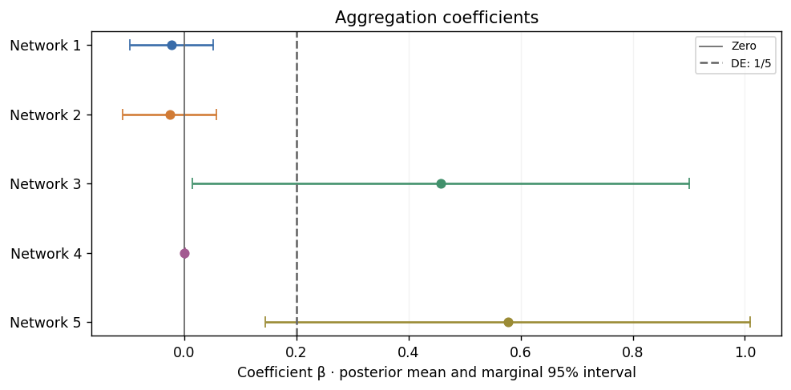
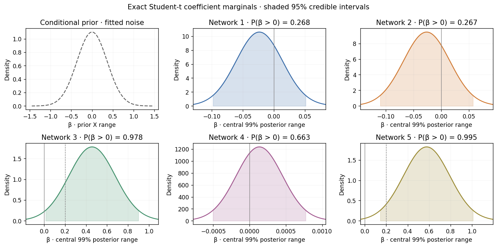
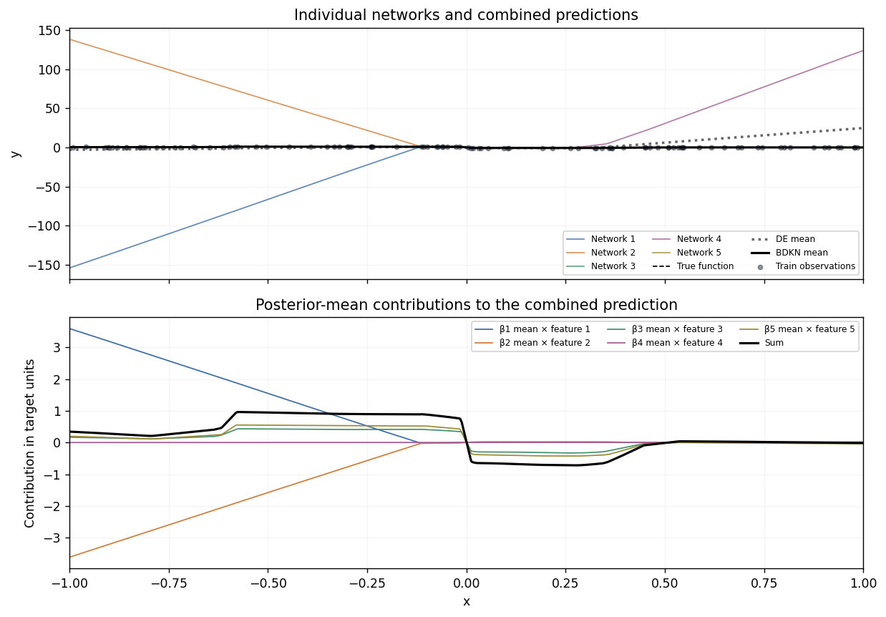
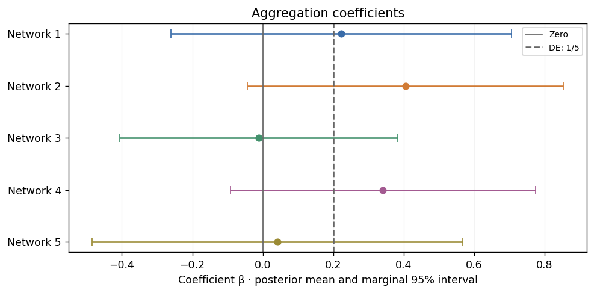
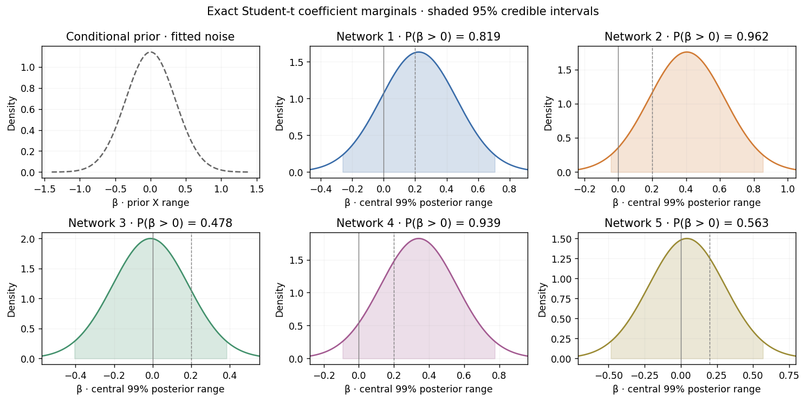
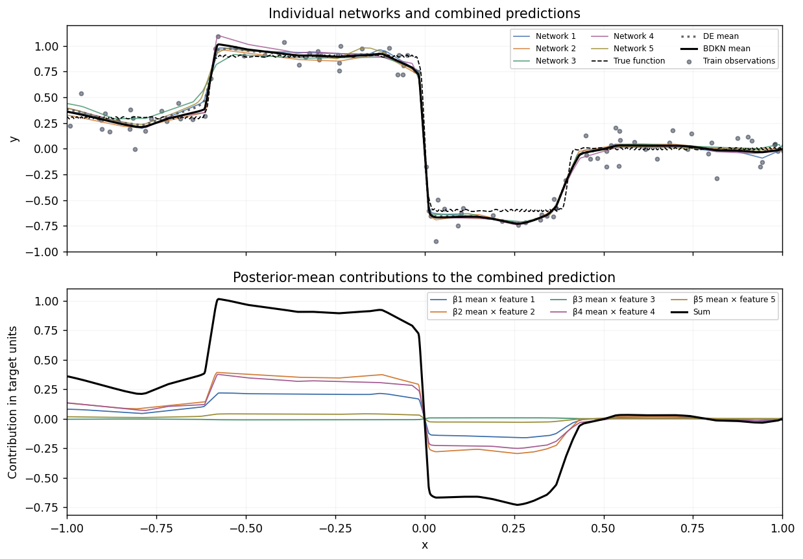
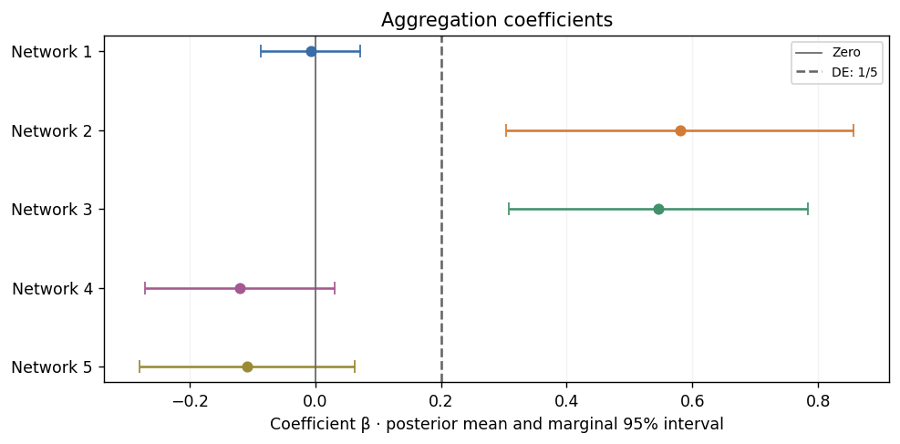
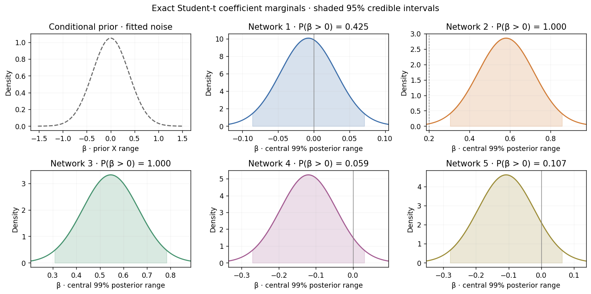
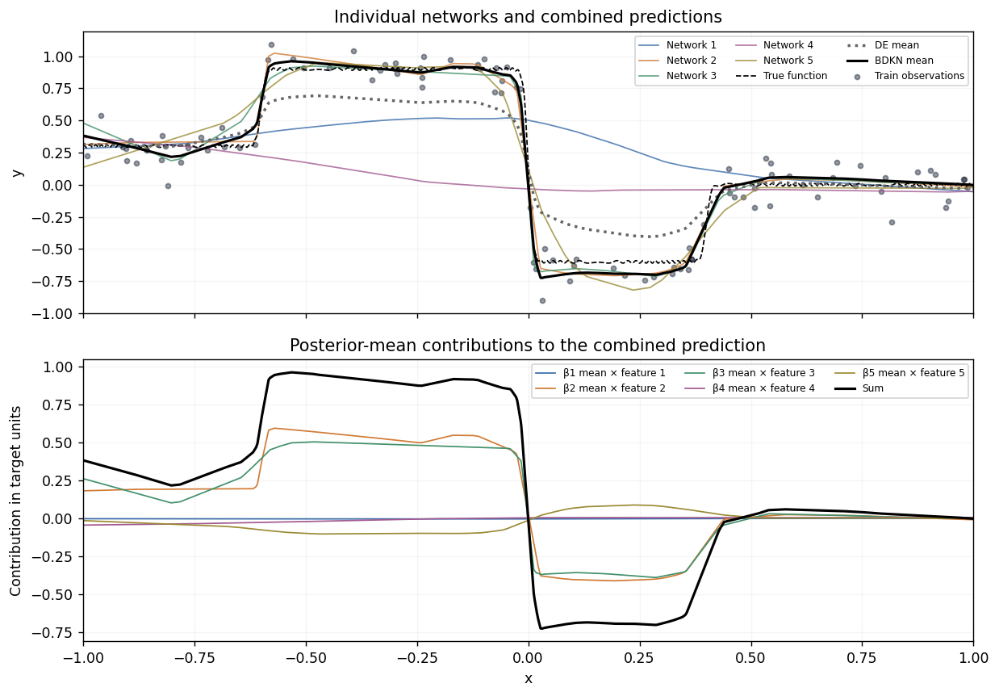

Regression comparison
Download resultsAggregation weights
Coefficients can be negative and need not sum to one. Intervals describe coefficient uncertainty; the dashed reference is DE’s fixed 1/H weight.
BDKN


Each density panel uses its own X range for readability; coefficient intervals above share a common axis. Prior reference conditions on fitted noise. Contribution shares use held-out inputs; test targets are used only for scoring.
| Network | β mean | 95% low | 95% high | P(β > 0) | Contribution share | Test RMSE | Test NLL |
|---|---|---|---|---|---|---|---|
| 1 | 0.11707 | -0.36801 | 0.60216 | 0.68344 | 0.10770 | 0.11461 | -0.64127 |
| 2 | 0.43255 | -0.08743 | 0.95254 | 0.94900 | 0.38807 | 0.11114 | -0.56796 |
| 3 | -0.04553 | -0.49600 | 0.40493 | 0.42073 | 0.04237 | 0.11567 | -0.35127 |
| 4 | 0.34541 | -0.08476 | 0.77558 | 0.94285 | 0.32373 | 0.12007 | -0.17405 |
| 5 | 0.14943 | -0.38309 | 0.68194 | 0.71052 | 0.13813 | 0.11541 | -0.42316 |
Functional repulsion · BDKN



Each density panel uses its own X range for readability; coefficient intervals above share a common axis. Prior reference conditions on fitted noise. Contribution shares use held-out inputs; test targets are used only for scoring.
| Network | β mean | 95% low | 95% high | P(β > 0) | Contribution share | Test RMSE | Test NLL |
|---|---|---|---|---|---|---|---|
| 1 | -0.02339 | -0.09794 | 0.05117 | 0.26757 | 0.37435 | 57.20622 | 3.41504 |
| 2 | -0.02622 | -0.10963 | 0.05719 | 0.26717 | 0.38109 | 51.03000 | 2.57179 |
| 3 | 0.45734 | 0.01440 | 0.90028 | 0.97843 | 0.10753 | 0.11587 | -0.36558 |
| 4 | 0.00014 | -0.00050 | 0.00077 | 0.66281 | 0.00153 | 42.44476 | 2.01743 |
| 5 | 0.57699 | 0.14427 | 1.00971 | 0.99526 | 0.13551 | 0.12125 | -0.47854 |
Weight repulsion · BDKN



Each density panel uses its own X range for readability; coefficient intervals above share a common axis. Prior reference conditions on fitted noise. Contribution shares use held-out inputs; test targets are used only for scoring.
| Network | β mean | 95% low | 95% high | P(β > 0) | Contribution share | Test RMSE | Test NLL |
|---|---|---|---|---|---|---|---|
| 1 | 0.22266 | -0.26054 | 0.70587 | 0.81860 | 0.22115 | 0.11359 | -0.58640 |
| 2 | 0.40506 | -0.04352 | 0.85364 | 0.96188 | 0.38346 | 0.11227 | -0.45998 |
| 3 | -0.01076 | -0.40519 | 0.38368 | 0.47848 | 0.01055 | 0.11534 | -0.39899 |
| 4 | 0.34097 | -0.09221 | 0.77415 | 0.93923 | 0.34316 | 0.11991 | -0.14801 |
| 5 | 0.04223 | -0.48375 | 0.56822 | 0.56313 | 0.04168 | 0.11499 | -0.17972 |
First-order repulsion · BDKN



Each density panel uses its own X range for readability; coefficient intervals above share a common axis. Prior reference conditions on fitted noise. Contribution shares use held-out inputs; test targets are used only for scoring.
| Network | β mean | 95% low | 95% high | P(β > 0) | Contribution share | Test RMSE | Test NLL |
|---|---|---|---|---|---|---|---|
| 1 | -0.00746 | -0.08588 | 0.07095 | 0.42532 | 0.00352 | 0.46620 | 0.20804 |
| 2 | 0.58027 | 0.30396 | 0.85658 | 0.99997 | 0.46021 | 0.11964 | -0.50375 |
| 3 | 0.54554 | 0.30790 | 0.78318 | 0.99999 | 0.43171 | 0.12012 | -0.45434 |
| 4 | -0.12003 | -0.27087 | 0.03082 | 0.05879 | 0.02143 | 0.51339 | 0.24438 |
| 5 | -0.10772 | -0.27886 | 0.06341 | 0.10732 | 0.08312 | 0.16880 | -0.51818 |